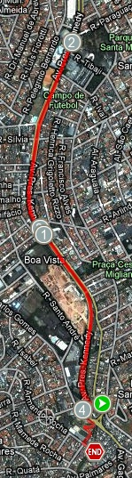

vamo, vamo, vamo…
Alecão
Engenheiro de Software que mora em Santo André-SP
Home page: http://www.dundes.com/wiki/Alex/HomePage
Jabber/GTalk: alex.dundes@gmail.com
Posts by Alecão
Ainda bem
27 years
by Alecão
in Ex-sedentário
Tive a infelicidade de torcer o pé no ônibus e doeu muito. Preocupado fui ao pronto-socorro, pelo raio-x, o médico me acalmou dizendo que nada havia quebrado e que era apenas uma luxação.
Antes do médico me acalmar eu fiquei bem preocupado, já pensou deixar a equipe na mão.
Agora estou tendo que me torturar com sacos de gelos de hora em hora para que a recuperação seja mais rápida.
E como diz meu primo: Vamo, vamo, vamo…
Exames
07 years
by Alecão
in Ex-sedentário
Esta semana realizei meu check-up… Fiz o teste ergom√©trico e os exames laboratoriais.
Me surpreendi no teste da esteira. Pois consegui não cair üôÇ
Brincadeiras a parte, foi muito bom saber que em esforço máximo eu aguentei bastante tempo.
E o melhor, o resultado do exame não constou nenhuma anomalia.
Já o teste laboratorial, a coisa não vai bem. Os níveis relacionados a gordura estão altos, acima dos limites que o próprio laboratório expõe no resultado.
Mas isso não é novidade, tenho estes índices elevados há algum tempo. Sei que é por causa do meu sobrepeso e apenas emagrecendo é que eu volto aos índices normais.
E com certeza é pelo esporte que conseguirei isso.
A maratona de revezamento é apenas o início. Me segurem!
Vodú é pra Jacú
67 years
by Alecão
in Ex-sedentário
 Quem estiver me alfinetando, por favor pare.
Quem estiver me alfinetando, por favor pare.
Há 2 semanas, ao sentar em uma cadeira de plástico na praça de alimentação, a cadeira se deformou, fui para o chão, com bandeja de comida e junto foi uma vergonha enorme.
Segunda passada, cai na escada de entrada de onde trabalho. Com direito a vídeo cassetada da câmera de segurança. (Depois vou publicar aqui).
Quarta, foi a máxima. Dentro do busão, ao abaixar para pegar uma moeda, estava com o pé direito ligeiramente encurvado quando houve um solavanco (talvez uma lombada) e fui arremessado para cima pousando sobre o pé torto. Rodearam passarinhos sobre minha cabeça.
A dor maior nem √© no p√©, mas sim na alma. Pois estava mancando e nem conseguia descer escada…
“Voc√™ foi ao m√©dico?” – Não…
Mas a dor está diminuindo e já consigo subir e descer escada e andar normalmente sem mancar.
Sara logo!
Vídeo reportagem do 5º Desafio da Mata Atlântica
57 years
by Alecão
in Ex-sedentário
Sei, sei… vão dizer… “Mas esta aventura foi faz tempo”.
√â o dia-a-dia corrido nosso. Pegar os arquivos, editar, subir para o youtube… leva tempo.¬†Mas ontem tomei coragem e fiz isso tudo.
Rever o vídeo me emocionou. Pois eu estava gripado, tanto que depois da prova tive febre alta e fiquei de molho.
Adorei lembrar da largada, da dificuldade, da visão linda da serra do mar, da paisagem postal, do Enio dos Baleias nos esperando na chegada, do chocolate quente, do brinde (tim-tim)…
Ela sorri para mim
57 years
by Alecão
in Ex-sedentário
 No dia 30 de julho, eu e Claudio fizemos uma aposta um com o outro de não tomar cerveja at√© o dia da maratona do Pão de A√ßucar… Era uma forma de incentivar e apimentar os esfor√ßos para a supera√ß√£o. Ai eu disse que parar de tomar cerveja nem seria um esfor√ßo grande porque já estava pensando em parar mesmo.
No dia 30 de julho, eu e Claudio fizemos uma aposta um com o outro de não tomar cerveja at√© o dia da maratona do Pão de A√ßucar… Era uma forma de incentivar e apimentar os esfor√ßos para a supera√ß√£o. Ai eu disse que parar de tomar cerveja nem seria um esfor√ßo grande porque já estava pensando em parar mesmo.
Ai que ele resolveu aumentar a aposta. “Então vamos incluir refrigerante”. E eu aceitei.
Na mesma sexta feira, já teve festinha dos aniversariantes do mês na empresa e CHEIO de refrigerante.
No sábado, minha mulher comprou um garrafa de 2 litros de coca-zero.
Na segunda feira, o pessoal do trabalho pediu uma coca de 2 litros no almo√ßo…
Que persegui√ß√£o…
E eu pensando que a cerveja iria fazer falta. Nem penso em cerveja, apenas na maldita garrafa de coca. E quando vejo a garrafa, pode ter certeza, ela está sorrindo para mim e diz. “Me bebe, me bebe, me bebe”.
Primeira Corridinha
07 years
by Alecão
in Ex-sedentário
Ontem, era sábado e veio a oportunidade de treinar na parte da manhã, como meus filhos dormiram fora de casa, eu e minha mulher fomos tomar café da manhã em uma padaria, já saí de casa com a roupa para treinar.
Estava muito frio e aos poucos a empolga√ß√£o para treinar foi diminuindo. Ao sair da padaria, uma garoa fina ca√≠a na cabe√ßa. Falei para minha mulher, me deixe em casa… E ela, “não, voc√™ vai treinar”. Como dizer não depois dessa, foi o empurrão que eu precisava. Então ela me deixou no in√≠cio do trajeto e foi embora.
Estava muito frio, pensei, vou correr para esquentar os ossos e parti já em um rítimo acelerado para ao qual estou acostumado e não parei mais. O corpo foi esquentar apenas aos 20 minutos de treino, quando o trotar começou a ficar prazeroso.
A sensação é muito boa e nessas horas vem na cabeça: Por que enrolo tanto para voltar a treinar?
Fui até o ponto que eu já sei que era meu limite para o momento e voltei, conseguindo correr até outro ponto em que pensei, chega por hoje Alex. E continuei andando até chegar em casa. Foram 34 minutos de corrida e mais 6 andando num total de 4,3 Km.
Hoje com um pouco de dor na pernas resolvi maneirar e fui com a família em uma rua de lazer. Os 4 caminharam por 28 minutos. Interessante que a mulher e filhos estão embarcando nessa comigo.
Segunda caminhada
17 years
by Alecão
in Ex-sedentário
Ontem eu fiz outra caminhada, desta vez mais leve, porque na primeira eu consegui ganhar bolhas no pé. Claro que o problema era o calçado não adequado, justo eu que sempre me atento a estes detalhes, mas desta vez me deu branco.
Foi uma caminhada de 40 minutos, menos que eu esperava, mesmo assim gostei de faze-la.
Tenho caminhado a noite e a partir de amanhã pretendo mudar os treinos para de manhã. Pretendo também começar a trotar.
18ª Maratona Pão de Açúcar de Revezamento
87 years
by Alecão
in Ex-sedentário
 É pessoal, mais um desafio, participar de uma equipe de 8 pessoas na 18ª Maratona Pão de Açúcar de Revezamento.
É pessoal, mais um desafio, participar de uma equipe de 8 pessoas na 18ª Maratona Pão de Açúcar de Revezamento.
Já tinha planos (de tanto o Claudio falar) para participar, mas acontece que este ano tenho um empurrãozinho a mais, pois estou na EQUIPE TAEQ. Convido a todos a acompanharem meus posts pelo hot-site da TAEQ.
Novamente um recomeço
17 years
by Alecão
in Ex-sedentário
Desde uma prova de 6 quilômetros no começo do ano, não estava conseguindo estabelecer uma rotina de treinos.
Olha que foram várias tentativas, primeiro tentei em março, mas ficou só em um simples treino. Um mês depois mais uma tentativa. Passou 2 meses até o outro treino em junho e depois disso encarei uma subidona sem estar treinado e ainda por cima gripado.
Foram treinos com um espaço de tempo muito grande entre um e outro. São recaídas de quem vem tendo problemas emocionais desde a visita ao médico, difícil entender o funcionamento de nossa cabeça.
Mas agora √© diferente, tenho uma equipe para ajudar e preciso estar preparado. E hoje foi o start de todo o processo. Como estava parado a muito tempo, preciso come√ßar devagar e esperar para que a “mem√≥ria muscular” venha.
Comecei então com uma caminhada de 4 quilômetros que duraram 50 minutos. Foi um trajeto de aclive para ajudar na musculatura da perna.
Agora que comecei não vou parar mais e que venha os próximos treinos.
Um ano de blog
97 years
by Alecão
in Ex-sedentário

Ontem foi meu aniversário e isso me fez lembrar que faz 1 ano que o blog Ex-Sedentário está no ar.
Tudo começou como uma vontade antiga de criar um blog sobre motivações em esporte, até que um dia tive uma conversa com o Claúdio pelo Messanger, que rendeu o primeiro post deste blog isso aconteceu no dia 05 de agosto do ano passado. Mas não adiantava criar o blog e deixar a intenção, foi quando o Claudio veio com a idéia de um desafio a se realizar no dia do meu aniversário. E assim no dia 8 de agosto do ano passado temos o primeiro post sobre um treino que fizemos juntos.
Na seqüência o primeiro solo do Cláudio e eu vários dias depois o meu.
Conversa vai, conversa vem com um colega de trabalho, incluímos mais um membro além dos 2 primos, o Thiago, no dia 28 de setembro do ano passado. Que a tempos havia parado, mas ao ler os testemunhos dos primos resolveu apostar na idéia de treinar e divulgar.
Em 6 de janeiro, tivemos a inclusão de um novo membro. O Luciano, também meu colega de trabalho, ficou parado um tempo e recentemente voltou aos treinos.
Ai o clube do bolinha acabou com a entrada da Ana. Que é colega de trabalho do Claudio e este de tanto tagarelar a incutiu o desejo de treinar e blogar.
Assim temos o nosso time com 5 membros que carregam a bandeira do Ex-Sedentário.
Fico muito feliz que a idéia se concretizou, que alguns tenham começado e não largado mais, outros tiveram suas recaídas e se recuperaram, outros estão nos passos iniciais. Essa idéia que tinha por fim ajudar a mim e aos outros.
A surpresa desse per√≠odo de um ano para mim, foi ver como fizemos muitos amigos corredores/blogueiros. Fiz amigos em provas. Não tinha id√©ia desta dimensão que o blog teria. Não sabia desta preocupa√ß√£o que os “corredores” tinham com cada um que está come√ßando. Adorei isso e por isso valeu e vale manter este blog.
Quero agradecer a todos que visitam o nosso blog. Muito Obrigado.
.jpg "DSC01837 (1024x576)")
.jpg "DSC01844 (1024x576)")
.jpg "DSC01889 (1024x576)")


{kind=link}
{kind=link}
{kind=link}
√öltimos comentários